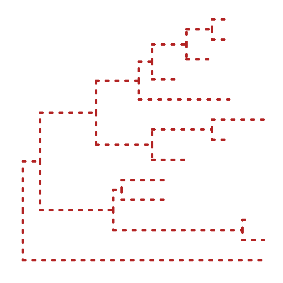
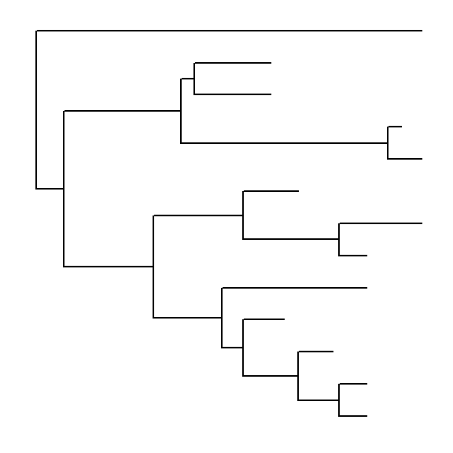
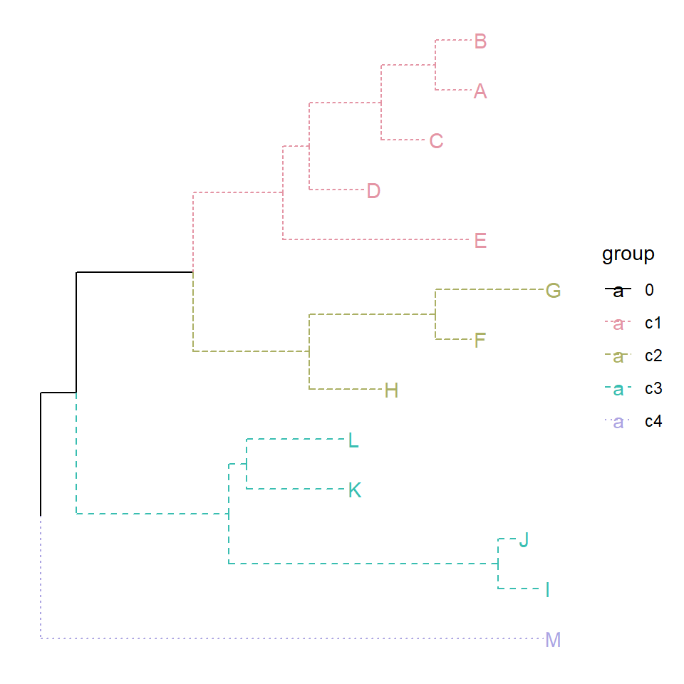
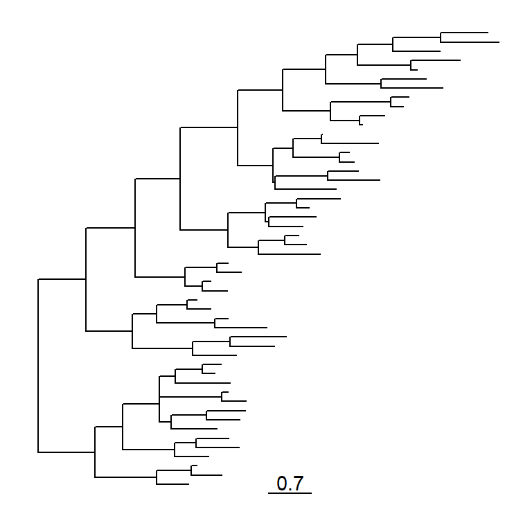

Chapter 6 Visual Exploration of Phylogenetic Tree
6.1 Internal node number
Some of the functions in ggtree work with clade and accept a parameter of internal node number. To get the internal node number, user can use geom_text2 to display it:
nwk <- system.file("extdata", "sample.nwk", package="treeio")
tree <- read.tree(nwk)
ggtree(tree) + geom_text2(aes(subset=!isTip, label=node), hjust=-.3) + geom_tiplab()
Another way to get the internal node number is using MRCA() function by providing a vector of taxa names. The function will return node number of input taxa’s most recent commond ancestor (MRCA). It works with tree and graphic object.
MRCA(tree, tip=c('A', 'E'))## [1] 17MRCA(tree, tip=c('H', 'G'))## [1] 21p <- ggtree(tree)
MRCA(p, tip=c('A', 'E'))## [1] 176.2 View Clade
ggtree provides a function viewClade to visualize a clade of a phylogenetic tree.
viewClade(p+geom_tiplab(), node=21)
6.3 Group Clades
The ggtree package defined several functions to manipulate tree view. groupClade and groupOTU methods were designed for clustering clades or related OTUs. groupClade accepts an internal node or a vector of internal nodes to cluster clade/clades.
Both groupClade and groupOTU work fine with tree and graphic object.
tree <- groupClade(tree, .node=21)
ggtree(tree, aes(color=group, linetype=group))
The following command will produce the same figure.
ggtree(read.tree(nwk)) %>% groupClade(.node=21) + aes(color=group, linetype=group)With groupClade and groupOTU, it’s easy to highlight selected taxa and easy to select taxa to display related features.
tree <- groupClade(tree, .node=c(21, 17))
ggtree(tree, aes(color=group, linetype=group)) + geom_tiplab(aes(subset=(group==2)))
6.4 Group OTUs
groupOTU accepts a vector of OTUs (taxa name) or a list of OTUs. groupOTU will trace back from OTUs to their most recent common ancestor and cluster them together. Related OTUs are not necessarily within a clade, they can be monophyletic (clade), polyphyletic or paraphyletic.
tree <- groupOTU(tree, .node=c("D", "E", "F", "G"))ggtree(tree, aes(color=group)) + geom_tiplab()
groupOTU can also input a list of tip groups.
cls <- list(c1=c("A", "B", "C", "D", "E"),
c2=c("F", "G", "H"),
c3=c("L", "K", "I", "J"),
c4="M")
tree <- groupOTU(tree, cls)
library("colorspace")
ggtree(tree, aes(color=group, linetype=group)) + geom_tiplab() +
scale_color_manual(values=c("black", rainbow_hcl(4))) + theme(legend.position="right")
groupOTU also works with graphic object.
p <- ggtree(tree)
groupOTU(p, LETTERS[1:5]) + aes(color=group) + geom_tiplab() + scale_color_manual(values=c("black", "firebrick"))
The following example use groupOTU to display taxa classification.
library("ape")
data(chiroptera)
groupInfo <- split(chiroptera$tip.label, gsub("_\\w+", "", chiroptera$tip.label))
chiroptera <- groupOTU(chiroptera, groupInfo)
ggtree(chiroptera, aes(color=group), layout='circular') + geom_tiplab(size=1, aes(angle=angle))
6.5 Collapse clade
With collapse function, user can collapse a selected clade.
cp <- collapse(p, node=21)
cp + geom_point2(aes(subset=(node == 21)), size=5, shape=23, fill="steelblue")
6.6 Expand collapsed clade
The collapsed clade can be expanded via expand function.
cp %>% expand(node=21)
p1 <- ggtree(tree)
p2 <- collapse(p1, 21) + geom_point2(aes(subset=(node==21)), size=5, shape=23, fill="blue")
p3 <- collapse(p2, 17) + geom_point2(aes(subset=(node==17)), size=5, shape=23, fill="red")
p4 <- expand(p3, 17)
p5 <- expand(p4, 21)
library(cowplot)
plot_grid(p1, p2, p3, p4, p5, ncol=5)
6.7 Scale clade
Collpase selected clades can save some space, another approach is to zoom out clade to a small scale.
plot_grid(ggtree(tree) + geom_hilight(21, "steelblue"),
ggtree(tree) %>% scaleClade(21, scale=0.3) + geom_hilight(21, "steelblue"),
ncol=2)
Of course, scaleClade can accept scale larger than 1 and zoom in the selected portion.
plot_grid(ggtree(tree) + geom_hilight(17, fill="steelblue") +
geom_hilight(21, fill="darkgreen"),
ggtree(tree) %>% scaleClade(17, scale=2) %>% scaleClade(21, scale=0.3) +
geom_hilight(17, "steelblue") + geom_hilight(21, fill="darkgreen"),
ncol=2)
6.8 Rotate clade
A selected clade can be rotated by 180 degree using rotate function.
tree <- groupClade(tree, c(21, 17))
p <- ggtree(tree, aes(color=group)) + scale_color_manual(values=c("black", "firebrick", "steelblue"))
p2 <- rotate(p, 21) %>% rotate(17)
plot_grid(p, p2, ncol=2)
set.seed(2016-05-29)
p <- ggtree(tree <- rtree(50)) + geom_tiplab()
for (n in reorder(tree, 'postorder')$edge[,1] %>% unique) {
p <- rotate(p, n)
print(p + geom_point2(aes(subset=(node == n)), color='red'))
}
6.9 Flip clade
The positions of two selected clades (should share a same parent) can be flip over using flip function.
plot_grid(p, flip(p, 17, 21), ncol=2)
6.10 Open tree
ggtree supports fan layout and can also transform the circular layout tree to a fan tree by specifying an open angle to open_tree function.
set.seed(123)
tr <- rtree(50)
p <- ggtree(tr, layout='circular') + geom_tiplab2()
for (angle in seq(0, 270, 10)) {
print(open_tree(p, angle=angle) + ggtitle(paste("open angle:", angle)))
}
6.11 Rotate tree
Rotating a circular tree is supported by rotate_tree function.
for (angle in seq(0, 270, 10)) {
print(rotate_tree(p, angle) + ggtitle(paste("rotate angle:", angle)))
}
6.12 Interactive tree manipulation
Interactive tree manipulation is also possible, please refer to https://guangchuangyu.github.io/2016/06/identify-method-for-ggtree.